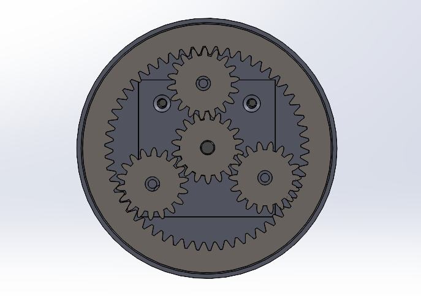
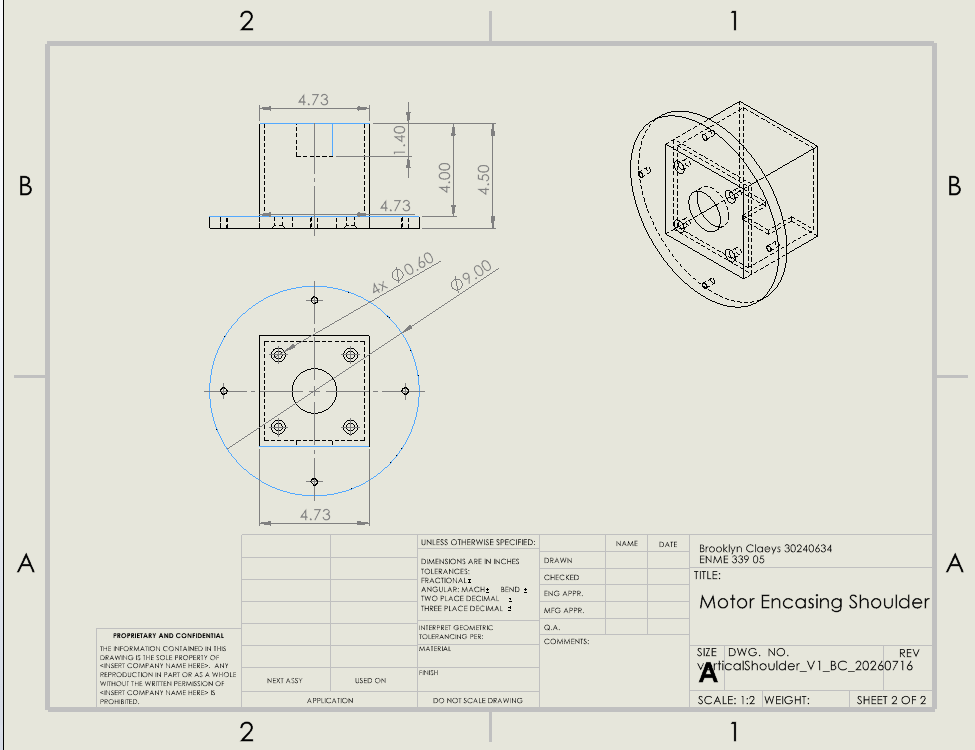
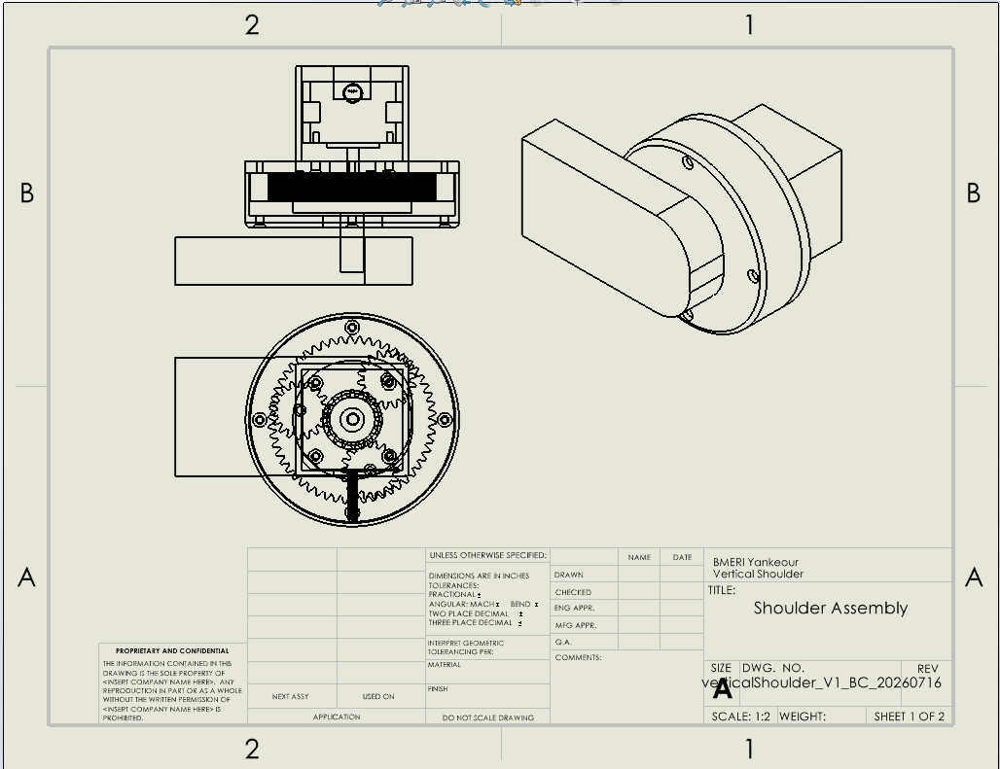
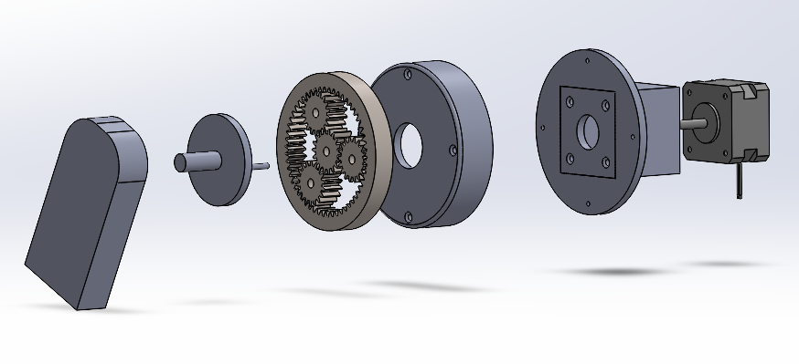

Adaptive Yankauer
Biomedical Engineering Research and Innovation Team (BMERIT) · Shoulder Joint Redesign
The Adaptive Yankauer is a Biomedical Engineering Research and Innovation Team (BMERIT) concept for a bed-mounted assistive arm that positions a Yankauer suction tip for users who may be unable to operate a conventional suction system independently. The system combines horizontal and vertical hinge motion, linear extension, a rotating base, bed-rail mounting, and a proposed eye-tracking interface to reposition the suction tip around the user.
My work on the shoulder joint focused on enclosing the exposed gears and motor shaft, increasing available torque through a revised motor and reduction, improving support through the transmission, and packaging the mechanism into a compact joint that could integrate with the arm.
CAD Design




SolidWorks views and engineering drawings of the revised shoulder joint show the assembled geometry, internal gear layout, motor casing, and assembly definition used to check spacing, support, motor alignment, fastener access, and the arm-side output connection. The revised assembly encloses the gears, supports the planets and carrier, and integrates the transmission directly into the joint.
Planetary Stage
Single-stage planetary reduction with a sun-gear input, three planet gears, a fixed internal ring, and carrier output. Tooth count and packaging were developed around an approximately 16:1 target within the available joint envelope.
Motor
A NEMA 17 stepper motor provides the central input. The revised CAD integrates the motor mount, shaft alignment, sun-gear fit, and transmission clearance directly into the joint assembly.
Shoulder Joint
The shoulder joint provides the vertical positioning motion for the Yankauer arm. The earlier team prototype left the gears and motor shaft exposed, used a different motor arrangement, and did not include a defined attachment to the surrounding arm structure. My redesign enclosed the drive, changed the motor and reduction to increase available torque, improved internal support, and packaged the mechanism as a compact joint.
Joint Motion and Internal Assembly
SolidWorks motion study showing the revised joint through its rotation, internal mechanism, and rotating assembly view.
Earlier Team Prototype
Earlier team prototype used as the baseline for the redesign, with exposed gears and shafting, a different motor arrangement, and no defined arm-side attachment.
Current Development
The redesign is now moving from CAD into fabrication, testing, and integration with the broader system. Current work includes CNC machining selected components, testing the assembled joint with the motor, adding the interfaces required to attach the joint to the rest of the Yankauer arm, and building a rear electrical housing for wiring and electronics.
Full System
The full team concept distributes positioning across a horizontal hinge, a vertical hinge, one linear translation axis, and a manually rotating base. Together, these motion axes provide two hinge directions, adjustable reach, and base-angle positioning so the Yankauer tip can be moved relative to the user.
A bed clamp anchors the device to the rail, the linked arm sections carry motion from the base toward the user, and a C-clamp guide at the end follows the top of the arm and holds the Yankauer attachment. The proposed eye-tracking components provide the user-input concept, while the mechanical joints and actuator reposition the tip. The revised shoulder joint provides the vertical positioning stage within this broader motion architecture.

